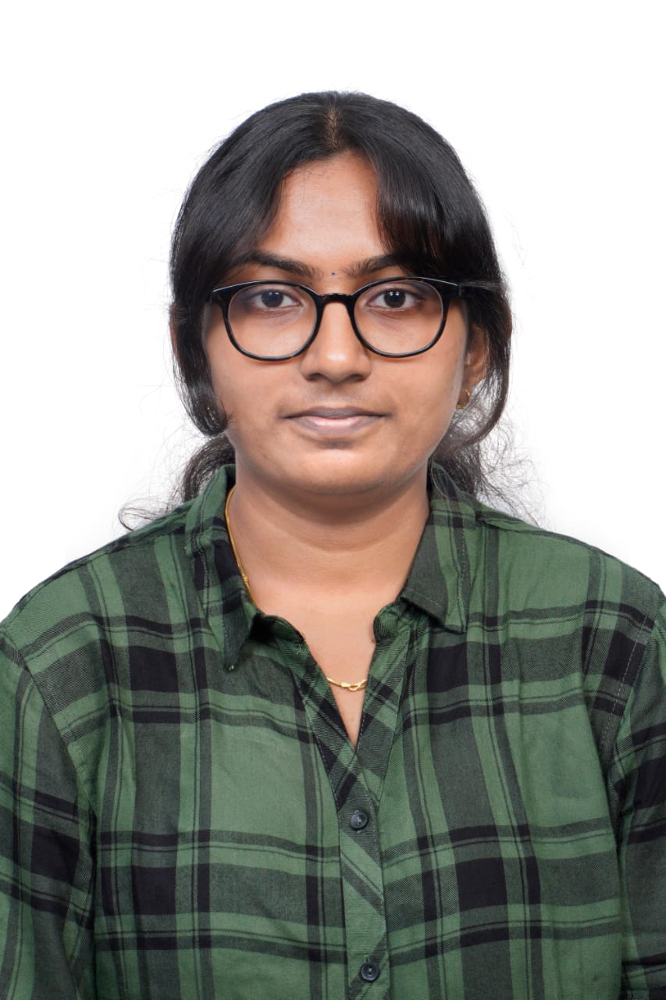

Rajamithra Kathiresan

Summary
I am a highly motivated and results-driven individual with expertise in problem-solving, communication, and project
management. With hands-on experience in data analysis and technical design, showcased through projects like the Smart
Soldier Vest and Electric Springs, I am passionate about leveraging technology and sustainability in collaborative
environments.
Education
- 12th grade (94.6%) - 2019-2020
- Bachelor's of Engineering in Electrical and Electronic Engineering - GPA: 7.3 (2021-2025)
Experience
-
Shiv Nadar Foundation | Project Management Intern | Nov 2024 - Present |
I worked on a sustainability-focused project, utilizing data analytics to research global impact ranking methodologies and
evaluate institutional initiatives. I proposed strategies to enhance sustainability efforts and align them with ranking criteria,
contributing to measurable improvements in key performance areas.
-
NISSI Engineering Solutions | Internship Student | Jan 2024 - Feb 2024 |
During the Power System Protection & Automation internship, I learned about EHS, testing and commissioning, relay
protection, and SCADA integration. I gained a strong theoretical foundation and practical insights into industry-standard
practices.
Skills
Unity, Project Management, Microsoft Office, C#, C++, Python, Machine Learning, Data Analysis, Power BI, Scripting,
Writing Skills, Leadership Experience, Problem Management, SQL, HTML, CSS, JS, Bootstrap
Certifications/Courses Relevant
- (Certification) NPTEL - Introduction to Machine Learning
- (Certification) NPTEL - Digital Image Processing
- (Certification) UDEMY - C++ Data Structures and Algorithms
- (Certification) NPTEL - Machine Learning and Deep Learning
- (Course) SQL - Databases and Applications Development
- (Course) C++ - OOPS and Data Structures Laboratory
- (Workshop) AI tools and ChatGPT workshop
- (Workshop) AI dashboards using Power BI
- (Certification) Foundational C# using Microsoft